A Princesa e a Coroa Perdida
Quadro 1 • O Despertar
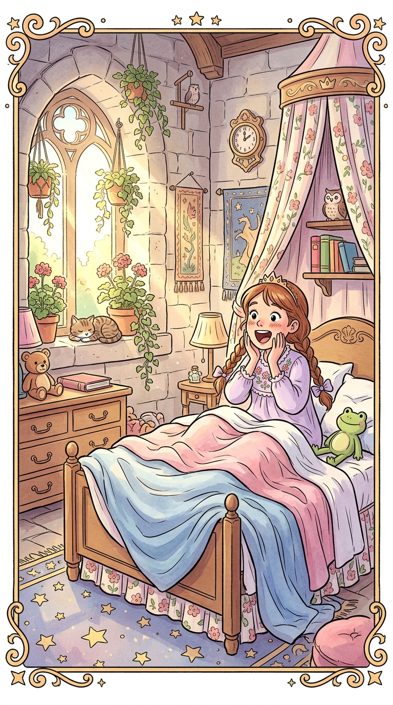
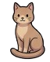
Zzz... ✨
???
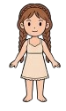
Quadro 2 • O Guarda-Roupa
Preciso do meu Vestido Real Rosa para o Grande Baile!
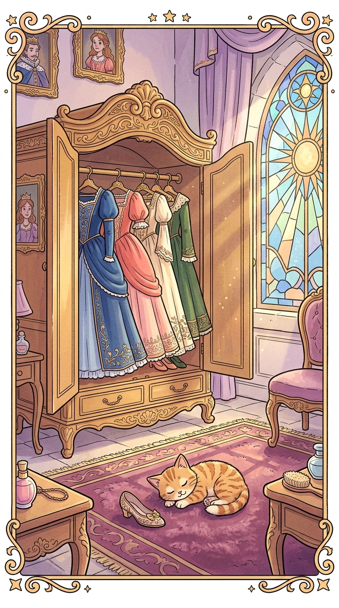
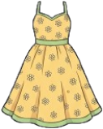
Jardim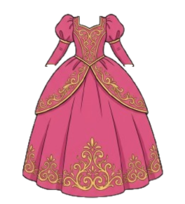
Baile Real ⭐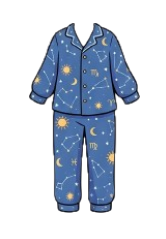
Dormir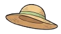
Quadro 3 • A Penteadeira
A gaveta de joias está trancada! Onde está a Chave com Fita?
✨
🔑
🌸
♡
☆
✿
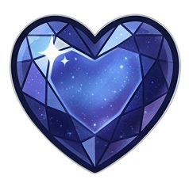
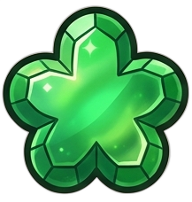
🐾 Trilha de Patinhas!
"Miau! O gatinho Pip correu com a coroa para a Grande Biblioteca Ancestral!"
🐾
🐾
🐾
Quadro 4 • O Portal dos Três Astros
A porta da Sala Secreta exige a chave certa! Leia a charada gravada no mármore.
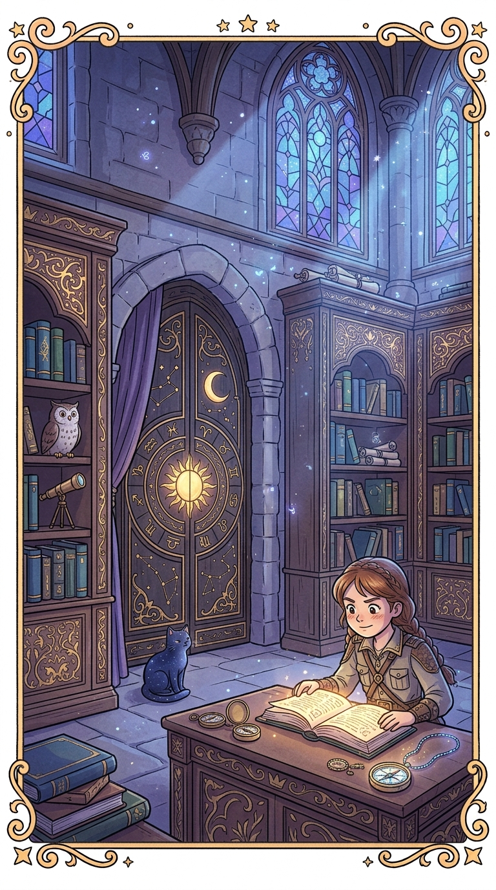
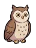
Uhuuu! 🌙☾
📜 O Canto dos Três Astros
"Não nasci do fogo que queima o dia,
Nem verto o pranto que o rubi reluz.
Sou curva de prata, serena e fria,
Que abraça a noite e ao segredo conduz."
Nem verto o pranto que o rubi reluz.
Sou curva de prata, serena e fria,
Que abraça a noite e ao segredo conduz."
Sol de Ouro
Lua Prateada ⭐
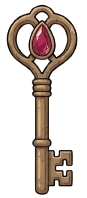
Gota de RubiQuadro 2.2 • A Sala das Relíquias
A Estante da Criação pede seus quatro tomos na ordem certa. O poema do friso conta a história das estações.
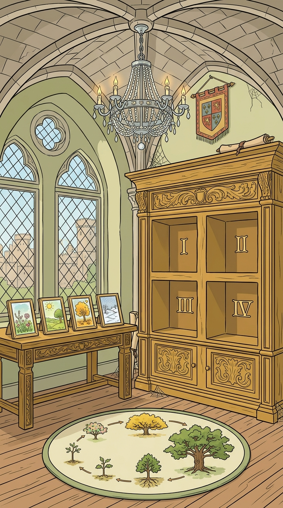
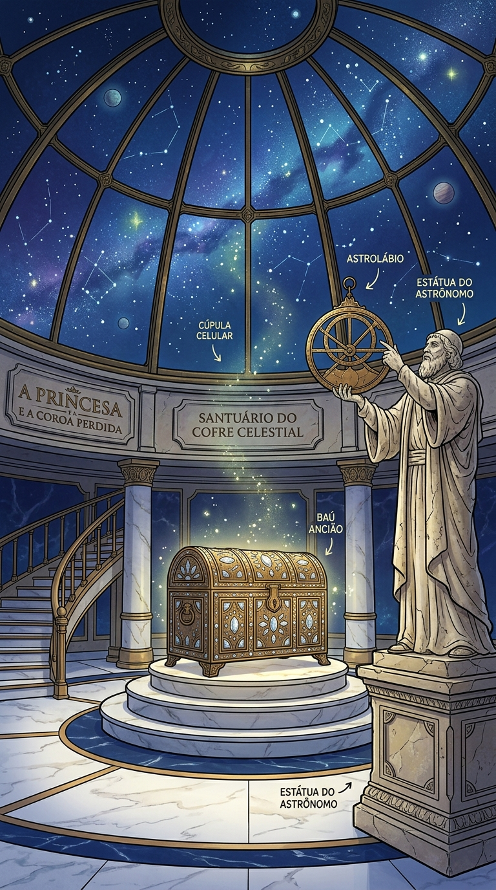
⚙️
✦ O Poema das Quatro Estações ✦
"O tempo caminha em passos sem fim, / Do grão enterrado ao sopro no jardim: / Primeiro adormece no ventre do chão, / Depois ganha forças rompendo a cerviz, / Floresce na copa em plena estação, / E tomba dourada de volta à raiz."
I
II
III
IV
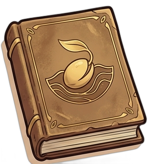
Semente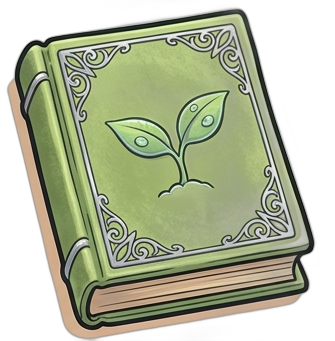
Broto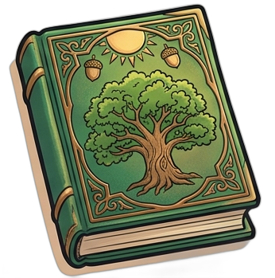
Carvalho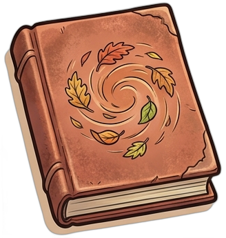
Folha Dourada